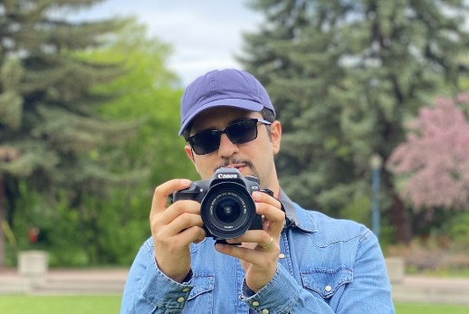

Postdoctoral Fellow | Fluid Dynamics & Soft Matter

Welcome to my personal webpage. I completed my Ph.D. in Mechanical Engineering at the University of Alberta, Canada, and I am currently a postdoctoral fellow in Prof. Chiara Neto’s group at the University of Sydney.
My research expertise lies in experimental fluid dynamics at both micro and macro scales, utilising techniques like Particle Image Velocimetry (PIV). I am particularly interested in the rheology of non-Newtonian flows, interfacial flow phenomena, and fabricating textured surfaces.